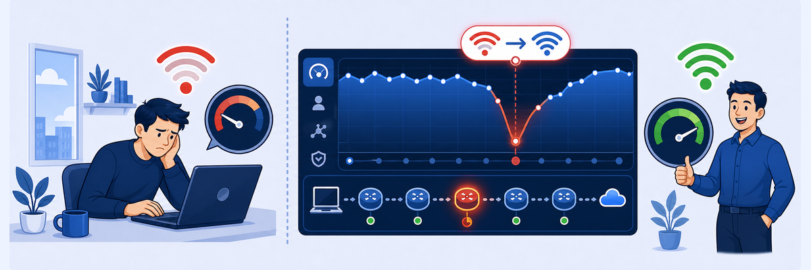

Lab 15: Troubleshoot Poor Wi-Fi
LAB 15
Scenario: Curtis Hardwick is experiencing poor performance with Salesforce. Using ZDX in the SDC environment, you'll identify his ZDX score, analyse the Wi-Fi contributing factors, compare with a healthy user, examine the cloud path hop view, and trace the root cause to a Wi-Fi SSID change event.

THINK FIRST · TROUBLESHOOT POOR WI-FI
Wi-Fi problems are among the most common causes of degraded digital experience for remote and office workers. ZDX correlates device-level Wi-Fi metrics (signal strength, SNR, channel) with application performance scores, making it possible to confirm Wi-Fi as the root cause before dispatching an IT ticket or replacing hardware.
- A user reports that Salesforce has been slow since yesterday morning. ZDX shows their Wi-Fi score dropped sharply at that time. What would you check next to confirm Wi-Fi is the cause and not just a coincidence — and what ZDX feature would help?
- Two users on the same floor both use "CorpNet" Wi-Fi. One has a poor ZDX score, the other is fine. What are the most likely explanations, and how does the Compare feature help distinguish them?
- ZDX Device Events shows a user switched from CorpNet-5GHz to CorpNet-2.4GHz. How does this event explain a sudden drop in ZDX score, and what would you tell the user to do?
Task 15.1 — Find Curtis Hardwick and Check ZDX Score
1 Search for the user
- In ZDX, navigate to Users.
- Search for
Curtis Hardwick. - Select his user entry to open the device detail page.

ZDX Users search — finding Curtis Hardwick by name to begin the ZDX-based troubleshooting workflow.
2 Select Salesforce Lightning and view ZDX score
- On Curtis's device detail page, select Salesforce Lightning from the applications dropdown.
- Observe the ZDX score — it shows fluctuating Poor and Good states.

Salesforce Lightning selected — the ZDX score view updates to show Curtis's experience with this specific application.

ZDX score fluctuating between Good and Poor — the instability suggests a transient issue, likely tied to a device or network event.
Task 15.2 — Analyse the ZDX Score
1 Click Analyze Score and review Wi-Fi factors
- Click the Analyze Score button on Curtis's ZDX score panel.
- Review the factor breakdown — Wi-Fi should appear as the primary contributing factor.
- Note the specific Wi-Fi metrics flagged: signal strength, SNR, or channel congestion.

Analyze Score — the Y-Engine will rank each contributing factor to explain why Curtis's ZDX score is poor.

Wi-Fi identified as the primary score factor — ZDX confirms the performance issue originates at the device's Wi-Fi connection, not the network or application.
Task 15.3 — Compare with a Healthy User
1 Compare ZDX scores across users
- Use the Compare feature in ZDX to compare Curtis's scores against another user with a Good ZDX score.
- Examine the key differences in Wi-Fi metrics between the two users.

ZDX Compare — Poor vs. Good user scores side by side, making the difference in Wi-Fi quality visible at a glance.

Key differences highlighted — ZDX Compare surfaces the metrics where Curtis differs from the healthy user, pointing directly to the root cause.
Task 15.4 — View Cloud Path (Hop View)
1 View Cloud Path Latency and Hop View
- Navigate to the Cloud Path tab for Curtis's device.
- Identify which hop has the highest latency — it should be the first hop (Wi-Fi / local network).
- Switch to the Hop View visualisation.

Cloud Path Latency — breaks down the total latency into device, Wi-Fi, network, Zscaler ZTE, and application segments.

Hop View — the Wi-Fi hop shows disproportionately high latency, visually confirming that the bottleneck is the local wireless connection.
Task 15.5 — Check Device Events for SSID Change
1 Filter Device Events by SSID change
- On Curtis's device detail page, navigate to the Device Events tab.
- Filter by SSID change event type.
- Identify the event where Curtis switched from
CorpNet-5GHztoCorpNet-2.4GHz. - Correlate this event timestamp with the ZDX score drop.

Device Events: SSID change — Curtis switched from CorpNet-5GHz to CorpNet-2.4GHz at the exact time his ZDX score dropped. Root cause confirmed.

Recovery event — when Curtis switched back to CorpNet-5GHz, his ZDX score recovered. This confirms the Wi-Fi band was the sole cause.

Curtis Hardwick device header — device summary with current ZDX score, OS version, and ZCC version for full context.
MENTAL NOTE
ZDX Wi-Fi troubleshooting workflow: (1) Find user in ZDX → (2) Analyze Score → confirm Wi-Fi is the top factor → (3) Compare with healthy user → (4) Hop View → confirm first hop has high latency → (5) Device Events → filter for SSID changes → find the Wi-Fi event that correlates with the score drop. The SSID change from 5GHz to 2.4GHz is a classic ZDX Wi-Fi finding: the user moved out of 5GHz range or auto-roamed to an inferior band.
ASK A QUESTION
ADD A NOTE